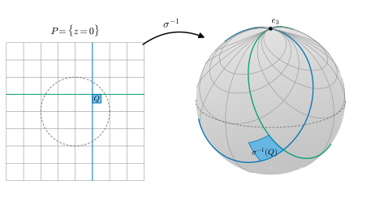
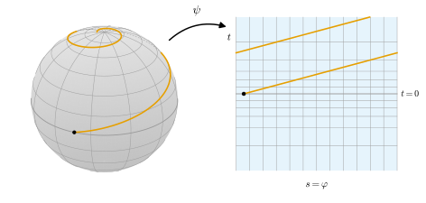

7.4 등각사상
이 절의 목표
- 등각사상과 국소 등각사상을 정의하고, 그것이 곡선 사이의 각을 보존하는 사상과 같음을 증명할 수 있다.
- \(E, F, G\)가 비례하는지로 등각성을 판정하고, 등온 매개화를 알아볼 수 있다.
- 입체사영과 메르카토르 사상이 등각임을 보이고, 등각사상·넓이를 보존하는 사상·등거리사상의 관계를 설명할 수 있다.
선수 지식
동기
7.3절은 아르키메데스의 투영으로 끝났다. 구면을 원기둥으로, 곧 평면으로 펼 때 넓이는 그대로 옮길 수 있지만 모양은 찌그러진다. 항해에 쓰는 지도는 사정이 반대다. 배가 나침반이 가리키는 한 방향, 곧 경선과 일정한 각을 유지하며 가는 항로를 지도 위에 직선으로 그리고 싶다. 그러려면 지도가 각을 보존해야 한다. 넓이는 틀려도 된다.
7.2절의 두 예가 실마리다. 닮음 \(p \mapsto \lambda p\)는 모든 길이를 \(\lambda\)배 하므로 각을 보존한다(비예 7.2.3(a)). 지수 사상 \((e^x\cos y, e^x\sin y)\)는 점마다 다른 배율 \(e^x\)로 길이를 늘이지만, 한 점에서는 모든 방향을 같은 배율로 늘인다(비예 7.2.10). “한 점에서 모든 방향의 길이를 같은 배율로 바꾸는 사상”이 각을 보존하는 사상이라는 것이 이 절의 첫 정리다.
연습 6.1.5에서 입체사영의 역사상 \(\sigma^{-1}\)의 두 편미분이 서로 수직이고 길이가 같다는 것을 계산했다. 그것이 “입체사영은 각을 보존한다”는 뜻이었음을 여기서 확인한다.

등각사상
이 절에서도 \(S_1, S_2\)는 정칙곡면이고 \(O \subseteq S_1\)은 열린집합이다.
정의 7.4.1 (등각사상, conformal map). 미분동형사상 \(\varphi\colon S_1 \to S_2\)와 매끄러운 함수 \(\lambda\colon S_1 \to (0, \infty)\)가 모든 \(p \in S_1\), \(w_1, w_2 \in T_pS_1\)에 대하여
를 만족하면 \(\varphi\)를 등각사상(conformal map)이라 하고 \(S_1\)과 \(S_2\)가 등각이라 한다. 미분동형사상을 요구하지 않고, 매끄러운 사상 \(\varphi\colon O \to S_2\)와 매끄러운 \(\lambda\colon O \to (0, \infty)\)가 모든 \(p \in O\)에서 (7.4.1)을 만족하면 \(\varphi\)를 국소 등각사상이라 한다.
\(\lambda(p)\)는 \(p\)에서 길이의 배율이다. (7.4.1)에서 \(w_1 = w_2 = w\)로 두면 \(\abs{d\varphi_p(w)} = \lambda(p)\abs{w}\)이므로 배율은 방향에 무관하고, 점에 따라서만 달라진다. \(\lambda \equiv 1\)이면 (국소) 등거리사상이다. \(\lambda(p) \gt 0\)이므로 \(d\varphi_p\)는 단사이고, 따라서 국소 등각사상은 모든 점에서 국소 미분동형사상이다(정리 6.4.11, 명제 7.2.5(a)와 같은 논법).
예 7.4.2 (등각사상의 예). (a) 국소 등거리사상은 \(\lambda \equiv 1\)인 국소 등각사상이다. 등거리사상은 등각사상이다.
(b) 닮음 \(\varphi(p) = cp\) (\(c \gt 0\))는 \(S^2(r)\)에서 \(S^2(cr)\) 위로 가는 등각사상이고 \(\lambda \equiv c\)이다. \(d\varphi_p(w) = cw\)이기 때문이다.
(c) 지수 사상 \(\psi(x, y, 0) = (e^x\cos y,\ e^x\sin y,\ 0)\)(예 6.4.12)는 평면에서 평면으로 가는 국소 등각사상이고 \(\lambda(x, y, 0) = e^x\)이다. 비예 7.2.10에서 \(\psi \circ \iota\)의 계수가 \(e^{2u}\,(1, 0, 1)\)임을 보았으므로, \(w = a\,\iota_u + b\,\iota_v\)이면 \(\abs{d\psi(w)}^2 = e^{2u}(a^2 + b^2) = e^{2u}\abs{w}^2\)이다(편극 논법으로 내적도 그렇다). \(\psi\)는 단사가 아니므로 등각사상은 아니다.
검증: verify/v-7-4-conformal-maps.py
비예 7.4.3 (방향마다 배율이 다른 사상). 평면의 늘이기 \(\varphi(x, y, 0) = (2x, y, 0)\)은 미분동형사상이지만 등각사상이 아니다. \(d\varphi_p(e_1) = 2e_1\), \(d\varphi_p(e_2) = e_2\)이므로 배율이 방향에 따라 \(2\)와 \(1\)로 다르다. 그 결과 각도 바뀐다. \(e_1\)과 \(e_1 + e_2\) 사이의 각 \(\pi/4\)가 \(2e_1\)과 \(2e_1 + e_2\) 사이의 각 \(\arctan(1/2) \approx 26.6^\circ\)이 된다.
“배율이 방향에 무관하다”와 “각을 보존한다”가 같다는 것은 선형대수의 사실이다. 흥미롭게도 직각만 보존해도 충분하다.
명제 7.4.4 (각을 보존하는 선형사상). \(V, W\)가 2차원 내적공간이고 \(T\colon V \to W\)가 단사인 선형사상이라 하자. 다음은 서로 동치다.
- (a) 어떤 \(c \gt 0\)이 있어 모든 \(v, w \in V\)에서 \(\inner{Tv}{Tw} = c^2\inner{v}{w}\)이다.
- (b) \(0\)이 아닌 모든 \(v, w \in V\)에서 \(Tv\)와 \(Tw\) 사이의 각은 \(v\)와 \(w\) 사이의 각과 같다.
- (c) \(\inner{v}{w} = 0\)이면 \(\inner{Tv}{Tw} = 0\)이다. 곧 \(T\)는 직교성을 보존한다.
증명 아이디어: 정규직교기저 \((e_1, e_2)\)를 잡으면 (c)에서 \(Te_1 \perp Te_2\)이다. 한편 \(e_1 + e_2\)와 \(e_1 - e_2\)도 직교하므로 그 상도 직교하고, 이것이 \(\abs{Te_1} = \abs{Te_2}\)를 준다.
증명. (a) ⇒ (b): \(\dfrac{\inner{Tv}{Tw}}{\abs{Tv}\abs{Tw}} = \dfrac{c^2\inner{v}{w}}{c\abs{v}\,c\abs{w}} = \dfrac{\inner{v}{w}}{\abs{v}\abs{w}}\)이고, 각은 이 코사인으로 정해진다(따름정리 1.5.6(c)). \(T\)가 단사이므로 \(Tv, Tw \neq 0\)이다. (b) ⇒ (c): \(v\) 또는 \(w\)가 \(0\)이면 분명하다. 둘 다 \(0\)이 아니고 직교하면 사이의 각이 \(\pi/2\)이므로 \(Tv\)와 \(Tw\)의 각도 \(\pi/2\)다.
(c) ⇒ (a): 그람-슈미트 과정(정리 1.5.10)으로 \(V\)의 정규직교기저 \((e_1, e_2)\)를 잡는다. (c)에서 \(\inner{Te_1}{Te_2} = 0\)이다. 또 \(\inner{e_1 + e_2}{e_1 - e_2} = \abs{e_1}^2 - \abs{e_2}^2 = 0\)이므로
\[ \begin{aligned} 0 = \inner{T(e_1 + e_2)}{T(e_1 - e_2)} &= \abs{Te_1}^2 - \inner{Te_1}{Te_2} + \inner{Te_2}{Te_1} - \abs{Te_2}^2\\ &= \abs{Te_1}^2 - \abs{Te_2}^2 \end{aligned} \]
이다. \(c = \abs{Te_1} = \abs{Te_2}\)로 두면 \(T\)가 단사이므로 \(c \gt 0\)이다. \(v = v^1e_1 + v^2e_2\), \(w = w^1e_1 + w^2e_2\)이면 쌍선형성에서
\[ \inner{Tv}{Tw} = \sum_{i,j} v^iw^j\inner{Te_i}{Te_j} = c^2(v^1w^1 + v^2w^2) = c^2\inner{v}{w} \]
이다(마지막 등호는 정규직교기저에서의 계산, 명제 1.5.9).
정리 7.4.5 (국소 등각사상은 각을 보존하는 사상이다). \(\varphi\colon O \to S_2\)가 매끄럽고 모든 \(p \in O\)에서 \(d\varphi_p\)가 단사라 하자. \(\varphi\)가 국소 등각사상일 필요충분조건은 다음이다. \(O\) 안의 두 정칙곡선 \(\alpha, \beta\)가 \(p\)에서 각 \(\vartheta\)를 이루면(정의 7.1.11), 정칙곡선 \(\varphi \circ \alpha\), \(\varphi \circ \beta\)도 \(\varphi(p)\)에서 각 \(\vartheta\)를 이룬다.
이 정리가 말하는 것. “각을 보존한다”는 기하적인 성질과 “미분이 내적을 한 배율로 늘인다”는 대수적인 성질은 같다. 다만 각을 보존하는 사상에서도 배율 \(\lambda\)가 매끄럽다는 것을 따로 확인해야 한다.
증명. \(\alpha(t_0) = p\)이면 명제 7.2.6의 증명처럼 \((\varphi \circ \alpha)'(t_0) = d\varphi_p(\alpha'(t_0))\)이고, \(d\varphi_p\)가 단사이므로 \(\varphi \circ \alpha\)는 정칙이다. \(\beta\)도 같다.
(⇒) \(d\varphi_p\)는 (7.4.1)에 의해 명제 7.4.4(a)를 만족하므로 (b)에 의해 \(\alpha'(t_0)\), \(\beta'(s_0)\) 사이의 각을 보존한다.
(⇐) \(p \in O\)와 \(0\)이 아닌 \(w_1, w_2 \in T_pS_1\)을 잡자. \(p\) 근처의 매개화 \(\mathbf{x}\)(\(\mathbf{x}(q) = p\), \(\mathbf{x}(U) \subseteq O\))로 \(w_i = D\mathbf{x}(q)(a_i, b_i)\)라 쓰면 \(\alpha_i(t) = \mathbf{x}(q + t(a_i, b_i))\)는 \(\alpha_i'(0) = w_i\)인 정칙곡선이다. 가정에서 \(d\varphi_p(w_1)\)과 \(d\varphi_p(w_2)\)의 각은 \(w_1\)과 \(w_2\)의 각과 같으므로 \(d\varphi_p\)는 명제 7.4.4(b)를 만족하고, (a)의 \(c = c(p) \gt 0\)이 있다. \(\lambda(p) = c(p)\)로 두면 (7.4.1)이 성립한다. 남은 것은 \(\lambda\)가 매끄럽다는 것이다. \(\mathbf{y} = \varphi \circ \mathbf{x}\)라 하면 정리 7.2.7(a)에서 \(\mathbf{y}_u = d\varphi(\mathbf{x}_u)\)이므로
\[ \lambda\big(\mathbf{x}(q')\big)^2 = \frac{\abs{d\varphi(\mathbf{x}_u)}^2}{\abs{\mathbf{x}_u}^2} = \frac{\inner{\mathbf{y}_u}{\mathbf{y}_u}}{E}(q') \qquad (q' \in U) \]
이다. 우변은 \(U\)에서 매끄럽고 양수이므로 \(\lambda \circ \mathbf{x}\)는 매끄럽다(양수의 제곱근). \(O\)의 모든 점이 이런 \(\mathbf{x}(U)\)에 들어 있으므로 \(\lambda\)는 매끄러운 함수다(정의 6.3.5).
\(E, F, G\)에 의한 판정과 등온 매개화
정리 7.2.7과 같은 판정이 등각사상에도 있다. “계수가 같다” 대신 “계수가 비례한다”가 된다.
정리 7.4.6 (\(E, F, G\)에 의한 국소 등각의 판정). \(\varphi\colon O \to S_2\)가 매끄럽다고 하자. \(\mathbf{x}(U) \subseteq O\)인 매개화 \(\mathbf{x}\)에 대하여 \(\mathbf{y} = \varphi \circ \mathbf{x}\)로 둔다. 다음은 서로 동치다.
- (i) \(\varphi\)는 국소 등각사상이다.
- (ii) 모든 \(p \in O\)에 대하여 \(p \in \mathbf{x}(U) \subseteq O\)인 매개화 \(\mathbf{x}\)와 매끄러운 \(\mu\colon U \to (0, \infty)\)가 있어서 \(U\)에서
- (iii) \(\mathbf{x}(U) \subseteq O\)인 모든 매개화 \(\mathbf{x}\)에 대하여 (7.4.2)인 매끄러운 \(\mu \gt 0\)이 있다.
이때 \(\mu = \lambda^2 \circ \mathbf{x}\)이다. 특히 같은 정의역의 두 매개화 \(\mathbf{x}\colon U \to S_1\), \(\mathbf{y}\colon U \to S_2\)의 계수가 매끄러운 \(\mu \gt 0\)에 대해 \((\bar E, \bar F, \bar G) = \mu(E, F, G)\)이면 \(\mathbf{y} \circ \mathbf{x}^{-1}\colon \mathbf{x}(U) \to \mathbf{y}(U)\)는 등각사상이다.
증명. (i) ⇒ (iii): 정리 7.2.7(a)와 (7.4.1)에서 \(\inner{\mathbf{y}_u}{\mathbf{y}_u} = \inner{d\varphi(\mathbf{x}_u)}{d\varphi(\mathbf{x}_u)} = (\lambda \circ \mathbf{x})^2 E\)이고, \(F, G\)도 같다. \(\mu = \lambda^2 \circ \mathbf{x}\)는 \(\lambda\)가 매끄러우므로 매끄럽다(명제 6.3.6). (iii) ⇒ (ii)는 정리 7.2.7의 증명과 같다.
(ii) ⇒ (i): \(p = \mathbf{x}(q)\), \(w = a\,\mathbf{x}_u + b\,\mathbf{x}_v\)이면 \(d\varphi_p(w) = a\,\mathbf{y}_u + b\,\mathbf{y}_v\)이므로 \(\abs{d\varphi_p(w)}^2 = \mu(q)(Ea^2 + 2Fab + Gb^2) = \mu(q)\abs{w}^2\)이다. 편극 논법(정의 7.2.1 뒤)에서 \(\inner{d\varphi_p w_1}{d\varphi_p w_2} = \mu(q)\inner{w_1}{w_2}\)이다. \(\lambda(p) = \abs{d\varphi_p(w)}/\abs{w}\)(\(w \neq 0\))로 두면 이 값은 매개화를 쓰지 않고 정해지므로 \(O\) 전체에서 잘 정의된 함수이고, \(\lambda \circ \mathbf{x} = \sqrt{\mu}\)가 매끄러우므로 \(\lambda\)는 매끄럽다. 따라서 \(\varphi\)는 국소 등각사상이다. 마지막 주장: \(\mathbf{y} \circ \mathbf{x}^{-1}\)은 미분동형사상이고(따름정리 7.2.8(a)의 증명과 같다) (ii)를 만족하므로 등각사상이다.
가장 간단한 경우는 매개화 자체가 평면에서 가는 등각사상인 경우다. 예 6.3.12(b)처럼 \(U\)를 평면 조각 \(\tilde U = U \times \{0\}\)(계수 \((1, 0, 1)\))으로 보면, 정리 7.4.6에서 \(\tilde{\mathbf{x}}\colon \tilde U \to \mathbf{x}(U)\)가 등각사상일 필요충분조건은 \((E, F, G) = \mu\,(1, 0, 1)\)이다.
정의 7.4.7 (등온 매개화, isothermal parametrization). 매개화 \(\mathbf{x}\colon U \to S\)가 \(U\)에서 \(E = G\), \(F = 0\)을 만족하면 \(\mathbf{x}\)를 등온 매개화(isothermal parametrization)라 한다.
등온 매개화에서는 \(\mathrm{I}_p(a\,\mathbf{x}_u + b\,\mathbf{x}_v) = E\,(a^2 + b^2)\)이다. 곧 좌표평면의 각이 곡면 위의 각과 같고, 길이는 점마다 배율 \(\sqrt{E}\)만 곱해진다. 연습 7.1.7에서 본 “좌표 칸이 작은 정사각형에 가깝다”는 조건이 모든 점에서 성립하는 것이다.
예 7.4.8 (등온 매개화의 예와 비예). (a) 평면의 \(\iota(u, v) = (u, v, 0)\)은 \(E = G = 1\), \(F = 0\)이므로 등온이다. 극좌표 매개화는 \(E = 1\), \(G = \rho^2\)이므로(예 7.1.8) \(\rho \neq 1\)인 곳에서 등온이 아니다.
(b) 현수면의 매개화 \((\cosh u\cos v,\ \cosh u\sin v,\ u)\)는 \(E = G = \cosh^2 u\), \(F = 0\)이므로(예 7.1.6(d)) 등온이다. 따라서 평면의 띠 \(\R \times (a, a + 2\pi)\)에서 현수면 위로 가는 등각사상이 있다. 나선면의 \(\mathbf{y}\)(연습 7.1.6)도 같은 계수를 가지므로 등온이다.
(c) 구면의 기준 매개화는 \(E = r^2 \neq r^2\sin^2\theta = G\)(적도 밖)이므로 등온이 아니다. 원기둥의 기준 매개화도 \(r \neq 1\)이면 \(E = r^2 \neq 1 = G\)이다. 그러나 원기둥은 \((r\cos(s/r), r\sin(s/r), v)\)로 다시 매개화하면 \(E = G = 1\)이 된다(예 7.2.9). 구면의 등온 매개화는 다음 두 예에서 만든다.
검증: verify/v-7-4-conformal-maps.py
입체사영과 메르카토르 지도
예 7.4.9 (입체사영은 등각이다). 단위구면 \(S^2 = S^2(1)\)과 북극 \(e_3 = (0, 0, 1)\)에 대해, 기준 예제의 입체사영(예 3.2.14)을 평면 \(P = \{z = 0\}\)으로 가는 사상으로 보자.
\[ \sigma\colon S^2 \setminus \{e_3\} \to P, \qquad \sigma(x, y, z) = \Big(\frac{x}{1 - z},\ \frac{y}{1 - z},\ 0\Big) \]
\(\sigma\)는 열린집합 \(\{z \neq 1\}\) 위의 매끄러운 사상의 제한이므로 매끄럽고, 역사상 \(\sigma^{-1}(u, v, 0) = \dfrac{(2u,\ 2v,\ u^2 + v^2 - 1)}{u^2 + v^2 + 1}\)도 \(\R^3\)의 매끄러운 사상의 제한이므로 매끄럽다(예 6.3.12(a)). 곧 \(\sigma\)는 미분동형사상이다. \(\mathbf{y} = \sigma^{-1} \circ \iota\), \(w = u^2 + v^2 + 1\)이라 하면 연습 6.1.5에서 계산한 대로
\[ \mathbf{y}_u = \frac{2}{w^2}\big(1 - u^2 + v^2,\ -2uv,\ 2u\big), \qquad \mathbf{y}_v = \frac{2}{w^2}\big(-2uv,\ 1 + u^2 - v^2,\ 2v\big) \]
이고 \(\inner{\mathbf{y}_u}{\mathbf{y}_v} = 0\), \(\abs{\mathbf{y}_u}^2 = \abs{\mathbf{y}_v}^2 = 4/w^2\)이다. 곧
이므로 \(\mathbf{y}\)는 구면에서 북극을 뺀 부분의 등온 매개화이고, 정리 7.4.6에 의해 \(\sigma^{-1}\colon P \to S^2 \setminus \{e_3\}\)은 \(\lambda = 2/(1 + u^2 + v^2)\)인 등각사상이다. 그 역사상 \(\sigma\)도 등각사상이고(연습 7.4.4) 배율은 \((1 + u^2 + v^2)/2\)이다. 구면의 점 \(p = (x, y, z)\)로 쓰면 \(1 - z = 2/(1 + u^2 + v^2)\)이므로 \(\sigma\)의 배율은 \(\lambda_\sigma(p) = 1/(1 - z)\)이다. 남극에서는 \(1/2\)이고 북극으로 갈수록 한없이 커진다(그림 7.4.1). 북극 근처는 남극에서의 입체사영으로 같은 계산을 하면 된다. 따라서 구면은 모든 점 근처에서 평면과 등각이다.
검증: verify/v-7-4-conformal-maps.py
입체사영은 극 하나를 뺀 구면 전체를 평면 하나로 옮기지만, 경선과 위도원은 원점을 지나는 직선과 원점 중심의 원이 된다. 항해에는 경선이 평행한 세로선이 되는 지도가 편하다. 이런 지도를 만들려면 가로 좌표를 경도 \(\varphi\)로 두고, 세로 좌표 \(t(\theta)\)를 등각이 되게 고르면 된다.
예 7.4.10 (메르카토르 사상). 구면 \(S^2(r)\)에서 반원 \(C\)를 뺀 부분 \(\mathbf{x}(U)\)에서 평면으로 가는 사상 \(\psi\)를 \(\psi(\mathbf{x}(\theta, \varphi)) = (\varphi,\ t(\theta),\ 0)\)으로 찾자. \(\mathbf{y} = \psi \circ \mathbf{x} = (\varphi, t(\theta), 0)\)이면 \(\mathbf{y}_\theta = (0, t'(\theta), 0)\), \(\mathbf{y}_\varphi = (1, 0, 0)\)이므로 계수는 \(\big((t')^2,\ 0,\ 1\big)\)이다. 구면의 계수는 \((r^2, 0, r^2\sin^2\theta)\)(예 7.1.2)이므로, (7.4.2)의 비례 조건 \((t')^2/r^2 = 1/(r^2\sin^2\theta)\)은 \(t' = \pm 1/\sin\theta\)와 같다. 북쪽이 위로 가게 \(t' = -1/\sin\theta\)를 고르면
이다. 실제로 \(\tfrac{d}{d\theta}\log\cot\tfrac\theta2 = -\dfrac{\csc^2(\theta/2)}{2\cot(\theta/2)} = -\dfrac{1}{2\sin(\theta/2)\cos(\theta/2)} = -\dfrac{1}{\sin\theta}\)이다. \(t\)는 \((0, \pi)\)에서 \(\R\) 위로 가는 순감소 미분동형사상(역함수 \(\theta = 2\arctan e^{-t}\))이므로 \(\mathbf{y}\)는 띠 \((0, 2\pi) \times \R\)의 매개화다. 계수는 \(\mu = 1/(r^2\sin^2\theta)\)에 대해 \(\mu\,(r^2, 0, r^2\sin^2\theta)\)이므로, 정리 7.4.6에 의해 \(\psi\)는 \(\mathbf{x}(U)\)에서 띠 위로 가는 등각사상이고 배율은 \(\lambda = 1/(r\sin\theta)\)이다. 적도(\(\theta = \pi/2\))에서 배율은 \(1/r\)이고, 극으로 갈수록 한없이 커진다. 메르카토르 지도에서 극지방이 크게 부풀어 보이는 이유다(그림 7.4.2). 경선과 일정한 각을 이루는 곡선(항정선)은 지도에서 직선이 된다. 등각사상이 각을 보존하고(정리 7.4.5) 경선의 상이 세로선이기 때문이다.
검증: verify/v-7-4-conformal-maps.py

비예 7.4.11 (아르키메데스의 투영은 등각이 아니다). 예 7.3.12의 투영 \(\psi\)는 \(\psi \circ \mathbf{x}\)의 계수가 \((r^2\sin^2\theta,\ 0,\ r^2)\)이다. 구면의 계수 \((r^2, 0, r^2\sin^2\theta)\)와 비교하면 \(\bar E/E = \sin^2\theta\), \(\bar G/G = 1/\sin^2\theta\)이므로, 적도 밖에서는 (7.4.2)를 만족하는 \(\mu\)가 없다. 정리 7.4.6((i) ⇒ (iii))에 의해 \(\psi\)는 어떤 열린집합에서도 국소 등각사상이 아니다. 경선 방향은 \(\sin\theta\)배, 위도원 방향은 \(1/\sin\theta\)배가 되어, 넓이는 보존하지만(두 배율의 곱이 \(1\)) 각은 보존하지 않는다. 메르카토르 사상은 반대로 각을 보존하지만 넓이요소를 \(\lambda^2 = 1/(r^2\sin^2\theta)\)배 한다.
검증: verify/v-7-4-conformal-maps.py
요약
- (국소) 등각사상은 미분이 내적을 점마다의 배율 \(\lambda(p)^2\)로 바꾸는 사상이다. \(\lambda \equiv 1\)이면 (국소) 등거리사상이다(정의 7.4.1).
- 2차원 내적공간 사이의 단사 선형사상에서 “내적을 상수배”, “각을 보존”, “직교를 보존”은 모두 같다(명제 7.4.4). 그래서 국소 등각사상은 곡선 사이의 각을 보존하는 사상이다(정리 7.4.5).
- \(\varphi\)가 국소 등각사상일 필요충분조건은 \(\varphi \circ \mathbf{x}\)의 계수가 \(\mathbf{x}\)의 계수에 비례하는 것이다(정리 7.4.6). \(E = G\), \(F = 0\)인 매개화가 등온 매개화다.
- 입체사영은 등각이고 배율은 \(1/(1 - z)\)이다. 메르카토르 사상 \((\varphi, \log\cot(\theta/2))\)는 등각이고 항정선을 직선으로 보낸다. 아르키메데스의 투영은 넓이를 보존하지만 등각이 아니다.
다음 절에서는 곡면의 “앞면과 뒷면”을 다룬다. 각 점의 접평면에 수직인 단위벡터는 두 개다. 곡면 전체에서 한쪽을 연속적으로 고를 수 있는가? 뫼비우스 띠에서는 그럴 수 없다는 것을 보게 된다.
연습문제
연습 7.4.1 ★ 참인지 거짓인지 판별하고 이유를 대어라. (a) 등각사상은 넓이를 보존한다. (b) 등온 매개화 \(\mathbf{x}\colon U \to S\)는 평면 조각 \(\tilde U\)에서 \(\mathbf{x}(U)\) 위로 가는 등각사상을 준다. (c) 국소 등각사상의 배율이 모든 점에서 \(1\)이면 국소 등거리사상이다. (d) 매끄러운 사상 \(\varphi\colon O \to S_2\)가 \(O\) 안의 모든 정칙곡선을 정칙곡선으로 보내고 곡선 사이의 각을 보존하면 국소 등각사상이다.
풀이
(a) 거짓. 닮음 \(p \mapsto 2p\)는 넓이를 \(4\)배 한다. 일반적으로 넓이요소는 \(\lambda^2\)배가 된다(연습 7.4.3의 풀이).
(b) 참. 정리 7.4.6 뒤의 설명에서 \(\mu = E\)이다.
(d) 참. \(d\varphi_p(w) = 0\)인 \(w \neq 0\)이 있다면 \(\alpha'(0) = w\)인 정칙곡선 \(\alpha\)에 대해 \((\varphi \circ \alpha)'(0) = d\varphi_p(w) = 0\)이므로 \(\varphi \circ \alpha\)가 정칙이 아니다. 따라서 \(d\varphi_p\)는 단사이고 정리 7.4.5를 쓸 수 있다. “정칙곡선을 정칙곡선으로” 보내는 조건은 빠질 수 없다. 평면의 \((x, y, 0) \mapsto (x^3, y^3, 0)\)은 원점에서 미분이 \(0\)이어서 원점을 지나는 곡선의 각이 정의되지 않는다.
연습 7.4.2 ★ 평면의 “로그 극좌표” \(\mathbf{z}(s, \varphi) = (e^s\cos\varphi,\ e^s\sin\varphi,\ 0)\), \((s, \varphi) \in \R \times (0, 2\pi)\)가 등온 매개화임을 보여라. 극좌표 매개화 \((\rho, \varphi)\)와 어떻게 관련되는가?
풀이
\(\mathbf{z}_s = e^s(\cos\varphi, \sin\varphi, 0)\), \(\mathbf{z}_\varphi = e^s(-\sin\varphi, \cos\varphi, 0)\)이므로 \(E = G = e^{2s}\), \(F = 0\)이다. \(\mathbf{z}\)는 극좌표 매개화 \(\mathbf{y}(\rho, \varphi)\)에 미분동형사상 \((s, \varphi) \mapsto (e^s, \varphi)\)를 합성한 것이므로 매개화이다. 명제 7.1.7로 확인하면 \(Dh = \diag(e^s, 1)\)이고 \(Dh^{\mathsf{T}}\diag(1, \rho^2)Dh = \diag(e^{2s},\ e^{2s})\)이다(\(\rho = e^s\)). \(\rho = e^s\)로 바꾸면 반지름 방향의 눈금이 \(\rho\)에 비례해 늘어나 각 방향의 눈금과 맞게 된다. \(\mathbf{z}\)는 예 7.4.2(c)의 지수 사상과 같은 식이다.
검증: verify/v-7-4-conformal-maps.py
연습 7.4.3 ★ 등각사상 \(\varphi\colon S_1 \to S_2\)가 모든 좌표 영역의 넓이를 보존하면 등거리사상임을 보여라.
풀이
매개화 \(\mathbf{x}\)와 \(\mathbf{y} = \varphi \circ \mathbf{x}\)에 대해 정리 7.4.6에서 \((\bar E, \bar F, \bar G) = \mu(E, F, G)\)이므로 \(\bar E\bar G - \bar F^2 = \mu^2(EG - F^2)\)이다. 넓이를 보존하므로 연습 7.3.7에서 \(\bar E\bar G - \bar F^2 = EG - F^2 \gt 0\)이고, 따라서 \(\mu^2 = 1\), \(\mu = 1\)이다. 곧 \(\lambda \equiv 1\)이고 \(\varphi\)는 등거리사상이다. (넓이요소가 \(\sqrt{\bar E\bar G - \bar F^2} = \mu\sqrt{EG - F^2} = \lambda^2\sqrt{EG - F^2}\)로 \(\lambda^2\)배가 된다는 것이 핵심이다.)
연습 7.4.4 ★ \(\varphi\colon S_1 \to S_2\), \(\chi\colon S_2 \to S_3\)이 배율 \(\lambda_\varphi\), \(\lambda_\chi\)인 등각사상이면 \(\chi \circ \varphi\)와 \(\varphi^{-1}\)도 등각사상이고, 배율이 각각 \((\lambda_\chi \circ \varphi)\,\lambda_\varphi\)와 \(1/(\lambda_\varphi \circ \varphi^{-1})\)임을 보여라.
풀이
연쇄법칙(정리 6.4.8)에서 \(\inner{d(\chi \circ \varphi)w_1}{d(\chi \circ \varphi)w_2} = \lambda_\chi(\varphi(p))^2\inner{d\varphi\,w_1}{d\varphi\,w_2} = \lambda_\chi(\varphi(p))^2\lambda_\varphi(p)^2\inner{w_1}{w_2}\)이다. 배율은 매끄러운 양의 함수의 곱이므로 매끄럽다. 역사상: \(q = \varphi(p)\), \(w_i' = d\varphi_p(w_i)\)이면 \(d(\varphi^{-1})_q = (d\varphi_p)^{-1}\)(따름정리 6.4.9)이므로 \(\inner{d(\varphi^{-1})w_1'}{d(\varphi^{-1})w_2'} = \inner{w_1}{w_2} = \lambda_\varphi(p)^{-2}\inner{w_1'}{w_2'}\)이다. \(1/(\lambda_\varphi \circ \varphi^{-1})\)은 매끄럽다(명제 6.3.10(c)). 합성과 역사상이 미분동형사상임은 연습 6.3.6이다.
연습 7.4.5 ★★ (항정선) \(0 \lt \beta \lt \pi/2\)라 하자. 메르카토르 평면의 직선 \(s = s_0 + t\tan\beta\)를 \(\psi^{-1}\)으로 옮긴 곡선이 모든 점에서 경선과 각 \(\beta\)를 이룸을 보이고, 적도에서 출발해 북극으로 다가가는 이 곡선의 길이가 \(\pi r/(2\cos\beta)\)로 유한함을 보여라. 곡선은 북극 둘레를 무한히 돈다. (항정선의 방정식은 do Carmo가 다른 방법으로 구한다 [dC §2-5 예 4].)
힌트
곡선을 \(\theta\)로 매개화한다. \(t = \log\cot(\theta/2)\)이므로 \(d\varphi/d\theta = \tan\beta \cdot dt/d\theta\)이다.
풀이
각. 메르카토르 평면에서 직선은 세로선(경선의 상)과 각 \(\beta\)를 이룬다. \(\psi^{-1}\)은 등각사상이므로(연습 7.4.4) 정리 7.4.5에 의해 곡선은 경선과 각 \(\beta\)를 이룬다.
길이. \(\theta\)를 매개변수로 쓰면 \(t = \log\cot(\theta/2)\), \(dt/d\theta = -1/\sin\theta\)(예 7.4.10)이므로 \(\varphi(\theta) = s_0 + t(\theta)\tan\beta\), \(\varphi'(\theta) = -\tan\beta/\sin\theta\)이다(\(\varphi\)는 \(2\pi\)를 법으로 읽는다). 곡선이 기준 매개화의 상을 여러 번 드나들지만, \(z\)축 둘레로 돌린 매개화도 같은 계수를 가지므로(예 7.2.2) 명제 7.1.9를 조각마다 쓸 수 있고,
\[ \abs{\alpha'(\theta)}^2 = E + G\,\varphi'(\theta)^2 = r^2 + r^2\sin^2\theta\cdot\frac{\tan^2\beta}{\sin^2\theta} = \frac{r^2}{\cos^2\beta} \]
이다. 속력이 상수이므로 \(\theta\)가 \(\pi/2\)에서 \(\varepsilon\)까지 가는 동안의 길이는 \((\pi/2 - \varepsilon)\,r/\cos\beta\)이고, \(\varepsilon \to 0\)이면 \(\pi r/(2\cos\beta)\)이다. 한편 \(\varphi(\theta) \to \infty\)이므로 곡선은 북극 둘레를 무한히 돈다. (경선과 이루는 각의 코사인을 직접 계산해도 \(\sqrt{E}/\abs{\alpha'} = \cos\beta\)이다. \(\beta = 0\)이면 경선이고 길이 \(\pi r/2\)로 맞는다.)
검증: verify/v-7-4-conformal-maps.py
연습 7.4.6 ★★ 입체사영 \(\sigma\)가 북극을 지나지 않는 구면 위의 원(구면과 평면 \(ax + by + cz = d\)의 교집합, \(c \neq d\))을 평면 \(P\)의 원으로 보냄을 보여라. 북극을 지나는 원(\(c = d\))은 어디로 가는가?
풀이
\((x, y, z) = \sigma^{-1}(u, v, 0) = (2u, 2v, u^2 + v^2 - 1)/w\) (\(w = u^2 + v^2 + 1\))를 평면의 방정식에 넣고 \(w\)를 곱하면
\[ \begin{aligned} &2au + 2bv + c(u^2 + v^2 - 1) = d(u^2 + v^2 + 1),\\ &\text{곧}\quad (c - d)(u^2 + v^2) + 2au + 2bv - (c + d) = 0 \end{aligned} \]
이다. \(c \neq d\)이면 \(c - d\)로 나누고 완전제곱하면 \((u + \tfrac{a}{c - d})^2 + (v + \tfrac{b}{c - d})^2 = k\)(\(k\)는 상수) 꼴이다. 원래 원은 점을 둘 이상 가지므로 상도 그렇고, 따라서 \(k \gt 0\)인 원이다. \(c = d\)이면 식이 \(2au + 2bv = 2c\), 곧 직선이 된다. 북극을 지나는 원은 평면의 직선으로 간다(그림 7.4.1의 격자선이 그 예다). 등각성과 함께 보면, 입체사영은 구면 위의 원과 그 사이의 각을 평면의 원(또는 직선)과 그 사이의 각으로 옮긴다.
검증: verify/v-7-4-conformal-maps.py
연습 7.4.7 ★★ (코시-리만 방정식) \(\Omega \subseteq \R^2\)가 열린집합이고 \(f, g\colon \Omega \to \R\)가 매끄러우며, 평면 조각 사이의 사상 \(\varphi(u, v, 0) = (f(u, v), g(u, v), 0)\)의 야코비 행렬식이 양수라 하자. \(\varphi\)가 국소 등각사상일 필요충분조건은 \(f_u = g_v\), \(f_v = -g_u\)(코시-리만 방정식)임을 보여라. \((u, v) \mapsto (u^2 - v^2, 2uv)\)는 어디에서 국소 등각인가?
풀이
\(\mathbf{y} = \varphi \circ \iota = (f, g, 0)\)의 계수는 \(\bar E = f_u^2 + g_u^2\), \(\bar F = f_uf_v + g_ug_v\), \(\bar G = f_v^2 + g_v^2\)이고 \(\iota\)의 계수는 \((1, 0, 1)\)이다. 정리 7.4.6에서 국소 등각일 필요충분조건은 \(\bar E = \bar G \gt 0\), \(\bar F = 0\)이다. 두 열 \(a = (f_u, g_u)\), \(b = (f_v, g_v)\)로 말하면 “\(a \perp b\)이고 \(\abs a = \abs b \neq 0\)”이다. \(a \neq 0\)에 수직이고 길이가 같은 벡터는 \(a\)를 \(\pm 90^\circ\) 돌린 \(\pm(-g_u, f_u)\)뿐이다. 행렬식 \(f_ug_v - f_vg_u\)가 양수이려면 \(b = (-g_u, f_u)\)여야 하고(\(-\)부호이면 행렬식이 \(-(f_u^2 + g_u^2) \lt 0\)), 이것이 \(f_v = -g_u\), \(g_v = f_u\)이다. 거꾸로 코시-리만 방정식과 행렬식 양수(곧 \(a \neq 0\))이면 위 조건이 성립한다. \(f = u^2 - v^2\), \(g = 2uv\)이면 \(f_u = 2u = g_v\), \(f_v = -2v = -g_u\)이고 행렬식은 \(4(u^2 + v^2)\)이므로, 원점을 뺀 곳에서 국소 등각이다. 원점에서는 미분이 \(0\)이고, 실제로 원점에서 만나는 두 반직선 사이의 각이 두 배가 된다.
검증: verify/v-7-4-conformal-maps.py